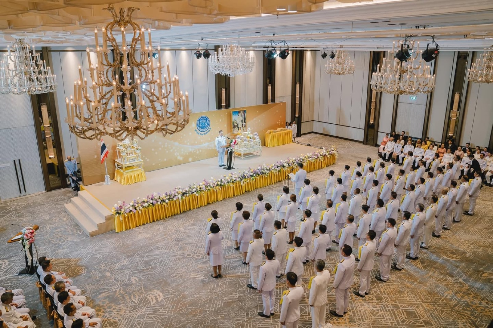
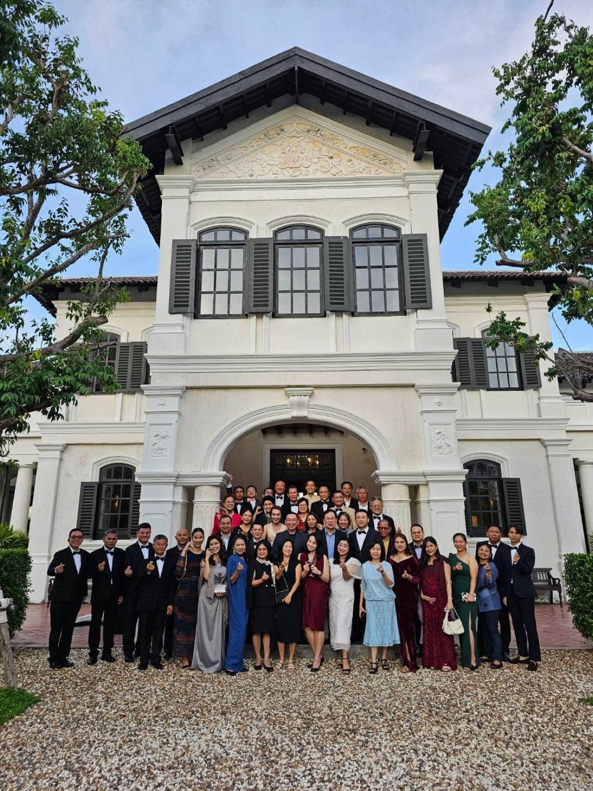

2567 · บทบาท · เหตุการณ์
สิ้นสุดวาระผู้พิพากษาสมทบ ศาลแรงงานภาค 8 — 4 ปี 10 เดือน 27 วัน


อาก๊อง…อ๊อดทำงานให้อาก๊องสำเร็จไปอีก 1 งานแล้วนะ 😇❤️
“อ๊อด…สนใจเป็นผู้พิพากษาสมทบมั้ย?” 8 ปีที่แล้วโก๊อุ๋ยพี่ชายคนเก่งโทรมาสอบถาม ได้แต่นึกในใจว่า จะทำได้มั้ย กฏหมายก็ไม่เคยเรียน ความขัดแย้งก็ไม่ชอบ ได้แต่บอกโก๊ว่าขอปรึกษาอาก๊องก่อนนะคับ อาก๊องเคยทำหน้าที่นี้มาก่อนน่าจะให้คำแนะนำได้ 🥰
“งานนี้ทำแล้วได้บุญ ทั้งลูกจ้างนายจ้างเธอก็เป็นมาหมดแล้ว เธอจิตใจดีทำได้ ทำเถอะ หาทางออกให้คนที่ไม่มีที่พึ่งแล้ว เป็นบุญเป็นกุศล“ อาก๊องบอก เลยตัดสินใจสมัครเข้ารับการคัดเลือกตั้งแต่วันนั้น 😇
กว่า 8 ปีผ่านไปอย่างรวดเร็ว นับตั้งแต่การสมัครสอบคัดเลือก ทั้งอบรม สอบข้อเขียน ทดสอบจิตวิทยา และอื่นๆ จนถึงวันรับราชโองการ โปรดเกล้าฯ บรรจุเข้ารับตำแหน่ง จนวันสิ้นสุดการปฏิบัติหน้าที่ ผ่านหลากหลายเหตุการณ์สำคัญของบ้านเมือง ทั้งในหลวงรัชกาลที่ 9 เสด็จสู่สวรรคาลัย และ covid-19 ที่กินเวลากว่า 3 ปี มีผลกระทบโดยตรงต่ออุตสาหกรรมท่องเที่ยวอย่างหลีกเลี่ยงไม่ได้ นทท ทั้งเกาะภูเก็ตเป็น 0 ว่าโหดแล้ว ปิดเปิดๆเมืองกว่า 2-3 ครั้งเพื่อสกัดกั้นโรคนั้นจำเป็นต่อชีวิต แต่ก็โหดร้ายสำหรับธุรกิจยิ่งกว่า หลายคนโชคร้ายสิ้นเนื้อประดาตัว เกิดคดีความจำนวนมากอย่างที่ไม่เคยเป็นมาก่อน เห็นใจทั้งนายจ้างทั้งลูกจ้าง (เห็นใจตัวเองด้วย ❤️🩹) แต่ไม่ว่าอย่างไร ศาลและ จนท ก็ปฏิบัติทำสุดความสามารถเพื่อหาทางออกที่ดีที่สุดสำหรับทุกฝ่าย ⚖️
จนถึงวันนี้รู้สึกขอบคุณอาก๊อง และตัวเองที่ตัดสินใจสมัครเข้าร่วมคณะ ได้ปฏิบัติหน้าที่ร่วมกับท่านอธิปดีศาล ท่านหัวหน้าศาล ท่านผู้พิพากษา ท่านเลขานุการ ท่านผู้พิพากษาสมทบ ท่านผู้ประนอม ตลอดจนเจ้าหน้าที่ศาลทุกท่าน คงไม่ใช่เรื่องบังเอิญที่ได้มาพบเจอ ทำงานร่วมกัน ❤️
สรุประยะเวลาปฏิบัติหน้าที่รวมถึงรักษาการผู้พิพากษาสมทบรุ่นที่ 4 ในศาลแรงงานภาค 8 จำนวนทั้งสิ้น 4 ปี 10 เดือน 27 วัน ⚖️
แล้วพบกันใหม่นะครับ ⚖️❤️
#ผู้พิพากษาสมทบในศาลแรงงานภาค8 ⚖️
#tohdaeng 🧧
#บ้านอาจ้อ ❤️